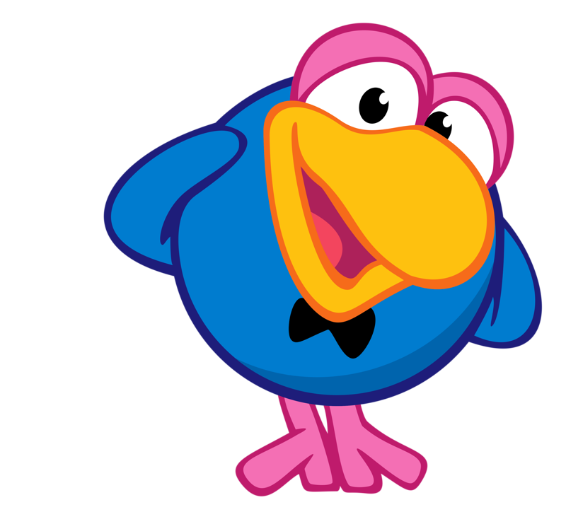
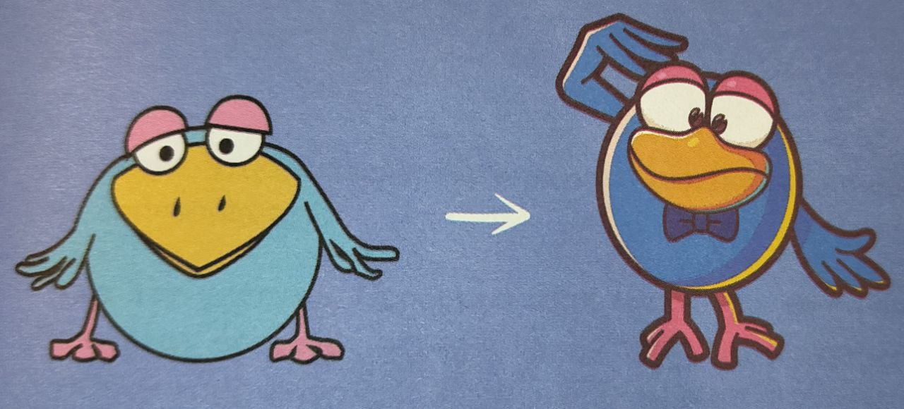
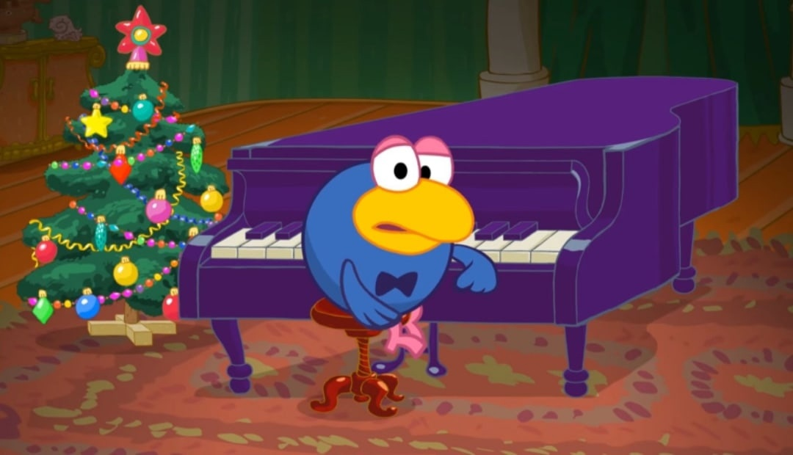
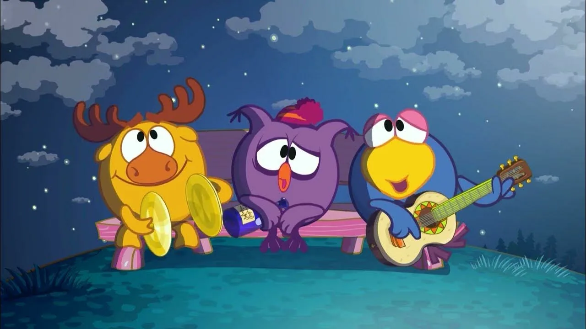

В одной из самых первых версий персонаж-ворон был слегка чудаковат. Он считал себя рыбкой, носил покрытый чешуёй хвост и жил на корабле в домике-бутылке. «Шоумен с тяжелым характером», гласила едва ли не первая его характеристика. Какие имена только ни пытались ему подбирать: Кар, Вроня, Тетеря. Торпеда ни одно не прижилось.

В конце концов у героя понизили градус сюрреалистичности, превратив во всеми нами любимого Кар-Карыча. В результате появился архетипичный образ мудрого, много всего повидавшего ворона.
- Я собирал Карыча со всех понемногу, - рассказывает актер озвучания Сергей Мардарь. С театральных и фольклорных персонажей, актёров, музыкантов: мудрых, вальяжных, юморных. Ширвиндт, Табаков, Ростропович и даже Борис Смолкин все они звучат в Карыче. Я старался сделать упор на размеренность, тактичность и ум. На необыкновенность.
В англоязычной версии «Смешариков» его зовут Карлин. Нет, стендап-комик Джордж Карлин здесь ни при чем (наверное).

Прекрасно играет на рояле и виолончели. Дает частные уроки музыки Нюше («Симулянты») и пения Барашу («Ля»). Кар-Карыч уверен, что если стремиться к чему-либо, то это обязательно произойдет. Любит театр и хорошо умеет выступать перед публикой.

Очень общительный, никогда не скрывает своих чувств. А зачем скрывать, если все эмоции положительные? Обладает абсолютным слухом («Абсолютный слух»). Кар-Карыч — неплохой гипнотизер. В серии «Забыть всё» он помог Барашу при помощи гипноза не бояться высоты, а в серии «Иллюзионист» загипнотизировал Кроша, приказав ему летать — что и возможно получилось (смешарики высказывали предположение, что он наоборот загипнотизировал всех, кроме Кроша, или и его в том числе, чтобы им показалось, что Крош взлетел, а на самом деле никакого полёта не было).
Ворон - единственный, кто рожден в Ромашковой долине. В серии «Психолог» он рассматривает свои детские фото и позже находит то самое дерево с гнездом, где он вылупился.